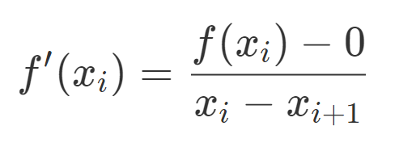
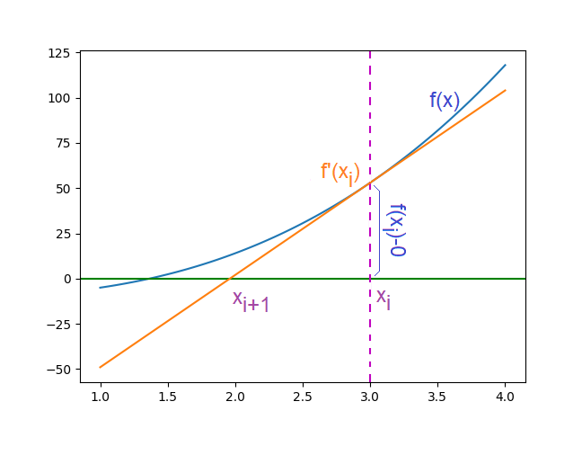
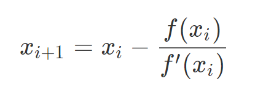

Newton-Raphson
Se deduce a partir de la interpretación gráfica o por medio del uso de la serie de Taylor
- De la gráfica, se usa el triángulo formado por la recta tangente que pasa por f(xi), con pendiente f'(xi) y el eje x. 
- El punto xi+1 es la intersección de la recta tangente con el eje x, que es más cercano a la raíz de f(x), valor que es usado para la próxima iteración


- Reordenando la ecuación de determina la fórmula para el siguiente punto: 
- El error se determina como la diferencia entre los valores sucesivos encontrados |xi+1 – xi|
- La gráfica animada muestra el proceso aplicado varias veces sobre f(x) para encontrar la raiz